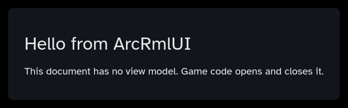

Quick start¶
Start here to see a first document open and close with the least setup: the samples plugin and its font sheet. The document is the FirstScreen sample, a title and a line of text with no view model. Install the samples plugin to run it as it is, or copy its files into your own project.
Before you start¶
The ArcRmlUI plugin is enabled in your project (Project setup).
See plugin content¶
The Content Browser shows plugin folders only when its content setting is on. Turn on Plugin Content in the Content
Browser's settings menu (the gear button; Settings > Show Plugin Content in the old Content Browser style), then
pick the plugin's folder, such as ArcRmlUISamples, under Plugins in the folder tree.
See it running¶
The samples plugin has C++ code, so the project must be a C++ project.
- Copy the
ArcRmlUISamplesplugin folder into your project'sPluginsfolder. - In
Config/DefaultGame.ini, add the samples' font sheet (the text needs a font, see the warning below):+FontSheets=/ArcRmlUISamples/UI/Rml/Fonts/Fonts.rcssunder[/Script/ArcRmlUI.ArcRmlUISettings]. - Restart the editor.
- Play in the map
L_ArcRmlSamples. - Open the console and type:
ArcRmlSamples.Open FirstScreen
- You should see a panel at the top left with the title "Hello from ArcRmlUI" and one line of text, as in the
picture below.
ArcRmlSamples.Closecloses it.
Text needs a font
The plugin ships no font. A text element whose font-family names no loaded font draws nothing and logs a
warning that starts "No font face defined". Declare a font sheet first
(Project setup, Fonts); the samples' sheet is step 2 above.
Without playing, double-click
FirstScreen.rml in the Content Browser: the editor preview opens it.

Open the console¶
The console takes the commands in this guide.
- In Play In Editor, press the console key (the tilde key by default) and type the command.
- In the editor, type it in the command box at the bottom of the Output Log window.
ArcRml.Open, ArcRml.Close, ArcRml.Preview, ArcRml.Inspect and the ArcRmlSamples.* commands need Play: without
it there is no local player. ArcRml.Validate also runs in the editor's Output Log.
The document¶
A document is an .rml file with a <head> and a <body>. The <meta> lines in the head say where and how it
opens:
layer: the layer it opens on,UI.Layer.Gamehere.input-modegame: the input stays with the game; the document takes no keys or clicks.
<rml>
<head>
<title>First screen</title>
<meta name="layer" content="UI.Layer.Game"/>
<meta name="input-mode" content="game"/>
<link type="text/rcss" href="/ArcRmlUISamples/UI/Rml/Shared/Samples.rcss"/>
<link type="text/rcss" href="FirstScreen.rcss"/>
</head>
<body>
<div class="fs-panel">
<h1 class="fs-title">Hello from ArcRmlUI</h1>
<p>This document has no view model. Game code opens and closes it.</p>
</div>
</body>
</rml>
A <link> href is a package path or a path relative to the document. The shared sheet sets the
text style with the family the samples' font sheet declares:
body, button {
font-family: 'Arc Samples Sans';
font-size: 20px;
color: #e8e8e8;
}
.fs-panel {
position: absolute;
left: 80px;
top: 80px;
padding: 24px 32px;
background-color: rgba(20, 24, 32, 0.9);
border-radius: 8px;
}
.fs-title {
display: block;
font-size: 36px;
margin-bottom: 12px;
}
To use the files without the samples plugin, copy them to, for example, Content/UI/Rml/FirstScreen/; the document's
path becomes /Game/UI/Rml/FirstScreen/FirstScreen.rml. Then change two things so the text draws:
- Replace the
Samples.rcsslink with a style sheet of your own whosefont-familynames a font declared in your Font Sheets (Project setup, Fonts). The'Arc Samples Sans'family exists only while the samples' font sheet is listed. - Use the new path in the open call of Open and close it instead of
/ArcRmlUISamples/UI/Rml/FirstScreen/FirstScreen.rml.
The quickest way to try your own file is the console: ArcRml.Open /Game/UI/Rml/FirstScreen/FirstScreen.rml opens it
with no code (Open the console).
Open and close it¶
Documents open per local player through the UArcRmlViewportSubsystem local player
subsystem. OpenDocument takes an FArcRmlDocumentRef, the document's package path, and returns whether it
opened; CloseDocument with the same reference closes it.
#include "FirstScreen/ArcRmlSamplesFirstScreen.h"
#include "Engine/LocalPlayer.h"
#include "Host/ArcRmlViewportSubsystem.h"
namespace ArcRmlSamplesFirstScreen
{
FArcRmlDocumentRef Open(ULocalPlayer* LocalPlayer)
{
UArcRmlViewportSubsystem* Viewport = LocalPlayer ? LocalPlayer->GetSubsystem<UArcRmlViewportSubsystem>() : nullptr;
if (!Viewport)
{
return FArcRmlDocumentRef();
}
const FArcRmlDocumentRef Document{TEXT("/ArcRmlUISamples/UI/Rml/FirstScreen/FirstScreen.rml")};
return Viewport->OpenDocument(Document) ? Document : FArcRmlDocumentRef();
}
}
This is an excerpt: it includes the sample's own header, FirstScreen/ArcRmlSamplesFirstScreen.h, which declares
Open and includes ArcRmlDocumentRef.h. In your module include ArcRmlDocumentRef.h and declare the function yourself.
To close it, call Viewport->CloseDocument(Document) with the reference Open returned.
Put the function in a module of your project whose Build.cs lists ArcRmlUIData and ArcRmlUI
(Project setup), and call it with the local player from your own game code, for example from a PlayerController's BeginPlay with GetLocalPlayer().
Create a Blueprint Function Library asset named BP_FirstScreen_Open with two functions, and call Open with
the player controller from the Level Blueprint (Blueprints > Open Level Blueprint in the level editor
toolbar), for example from its Event BeginPlay node.
Open (input PlayerController, output Document):
- Make Arc Rml Document Ref with
Path/ArcRmlUISamples/UI/Rml/FirstScreen/FirstScreen.rml. - Arc Rml Viewport Subsystem (in the palette: Get ArcRmlViewportSubsystem) with the
PlayerControllerinput. - Open Document on the subsystem with that
Document. - A branch on its return value: when true, the return node outputs the document.

Close (inputs PlayerController, Document):
- Arc Rml Viewport Subsystem with the
PlayerControllerinput. - Close Document on the subsystem with the
Documentinput.

Other ways to run it¶
ArcRmlSamples.Open FirstScreen (above) runs the C++ Open. ArcRmlSamples.OpenBP FirstScreen opens it
through the Blueprint Open function instead; ArcRmlSamples.Close then calls the Blueprint Close function.
Any document also opens by path from the console:
ArcRml.Open /ArcRmlUISamples/UI/Rml/FirstScreen/FirstScreen.rml, and ArcRml.Close with the same path closes it.
Next¶
- Working with documents: edit, save and see the change; where errors show.
- Concepts: layers, input modes, view models and bindings.
- Samples: every sample and the page that explains it.
- Walkthrough: how a complete screen of the demo is built.
Nothing on screen? See Troubleshooting.